CoC Point-in-Time counts are reported on HUD’s administrative areas,
which do not line up with Census geography. homeless
provides county-level estimates obtained by apportioning CoC counts to
counties (population-density weighting) and imputing the small share of
counties with no CoC, following Almquist, Helwig and You (2020).
homeless_na is the same table before imputation;
sp_homeless carries the county geometry for mapping.
str(homeless[, c("fips", "state_name", "count10", "count24", "avg")])
#> tibble [3,144 × 5] (S3: tbl_df/tbl/data.frame)
#> $ fips : chr [1:3144] "01001" "01003" "01005" "01007" ...
#> $ state_name: chr [1:3144] "Alabama" "Alabama" "Alabama" "Alabama" ...
#> $ count10 : num [1:3144] 75 233 12 14 34 15 10 138 22 31 ...
#> $ count24 : num [1:3144] 58 178 23 28 68 11 21 125 44 28 ...
#> $ avg : num [1:3144] 63 157.9 10.6 12.8 30.9 ...
sum(is.na(homeless_na$count24)) # counties imputed in 2024
#> [1] 15
library(sf); library(ggplot2); library(tigris)
#> Linking to GEOS 3.14.1, GDAL 3.12.3, PROJ 9.8.0; sf_use_s2() is TRUE
#> To enable caching of data, set `options(tigris_use_cache = TRUE)`
#> in your R script or .Rprofile.
sf_use_s2(FALSE)
#> Spherical geometry (s2) switched off
# log fills bring out the wide spatial variation; 0/NA shown grey
conus <- function(x) x[!x$ST %in% c("AS", "GU", "MP", "VI"), ] # center the map
poslog <- function(v) { v[v <= 0] <- NA; v }
fillc <- function(name) scale_fill_viridis_c(trans = "log10", name = name,
labels = scales::comma, na.value = "grey92")
fillr <- function() scale_fill_viridis_c(trans = "log10", name = "per 100k",
labels = scales::comma, na.value = "grey92")
ycol <- function(y) sprintf("count%02d", y %% 100)
# county centroids carrying ACS population, for aggregating to CoCs
cpt <- suppressWarnings(st_centroid(sp_homeless[, c("fips", "population")]))
# CoC population in a given year = sum of population of counties whose centroid
# falls in the CoC (used as the per-capita denominator for CoCs)
coc_pop <- function(year) {
coc <- get(paste0("coc", year))
j <- suppressWarnings(st_join(cpt, coc[, "COCNUM"], left = FALSE))
aggregate(population ~ COCNUM, st_drop_geometry(j), sum)
}Trends for the U.S., California and Washington
Total homeless and per-capita rate, 2007–2025, summing the county estimates by region.
yrs_all <- 2007:2025
ycols <- sprintf("count%02d", yrs_all %% 100)
regions <- list(US = homeless,
California = homeless[homeless$state == "06", ],
Washington = homeless[homeless$state == "53", ])
trend <- do.call(rbind, lapply(names(regions), function(nm) {
h <- regions[[nm]]
data.frame(region = nm, year = yrs_all,
total = sapply(ycols, function(c) sum(h[[c]], na.rm = TRUE)),
pop = sum(h$population, na.rm = TRUE))
}))
trend$region <- factor(trend$region, c("US", "California", "Washington"))
trend$per100k <- trend$total / trend$pop * 1e5
# total: faceted with free y-axes so CA/WA are legible next to the US
ggplot(trend, aes(year, total)) +
geom_line(color = "steelblue") + geom_point(size = 1.2, color = "steelblue") +
facet_wrap(~ region, scales = "free_y") +
scale_y_continuous(labels = scales::comma) +
labs(title = "Total homeless, 2007-2025", y = NULL, x = NULL) + theme_minimal()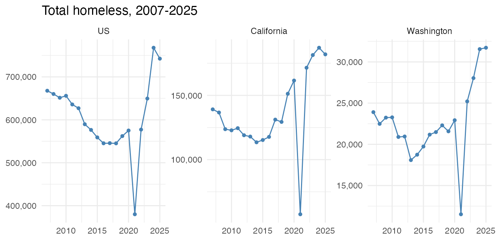
# per capita: one axis (rates are comparable), colored by region
ggplot(trend, aes(year, per100k, color = region)) +
geom_line(linewidth = 0.9) + geom_point(size = 1.3) +
labs(title = "Homeless per 100,000, 2007-2025", y = "per 100k",
x = NULL, color = NULL) + theme_minimal()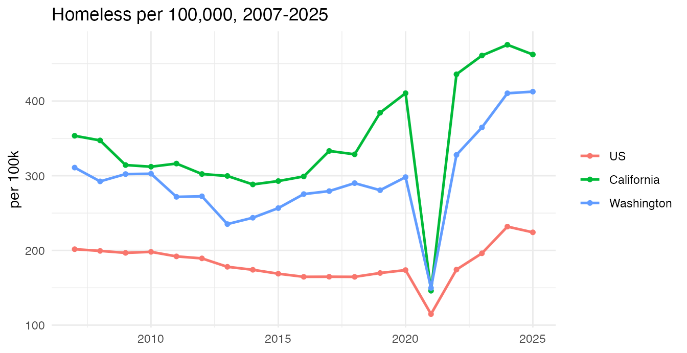
County vs CoC: the same data at two resolutions
Disaggregating to counties reveals spatial detail that the CoC areas mask. Below, 2024 totals shown first at the CoC level (administrative) and then at the county level (this package’s estimate).
coc24 <- shift_geometry(conus(merge(coc2024, hud2024, by.x = "COCNUM", by.y = "coc_num")))
coc24$count <- poslog(coc24$count)
cty24 <- shift_geometry(sp_homeless); cty24$count <- poslog(sp_homeless$count24)
ggplot(coc24) + geom_sf(aes(fill = count), color = NA) + fillc("PIT") +
labs(title = "United States, 2024 - CoC level") + theme_void()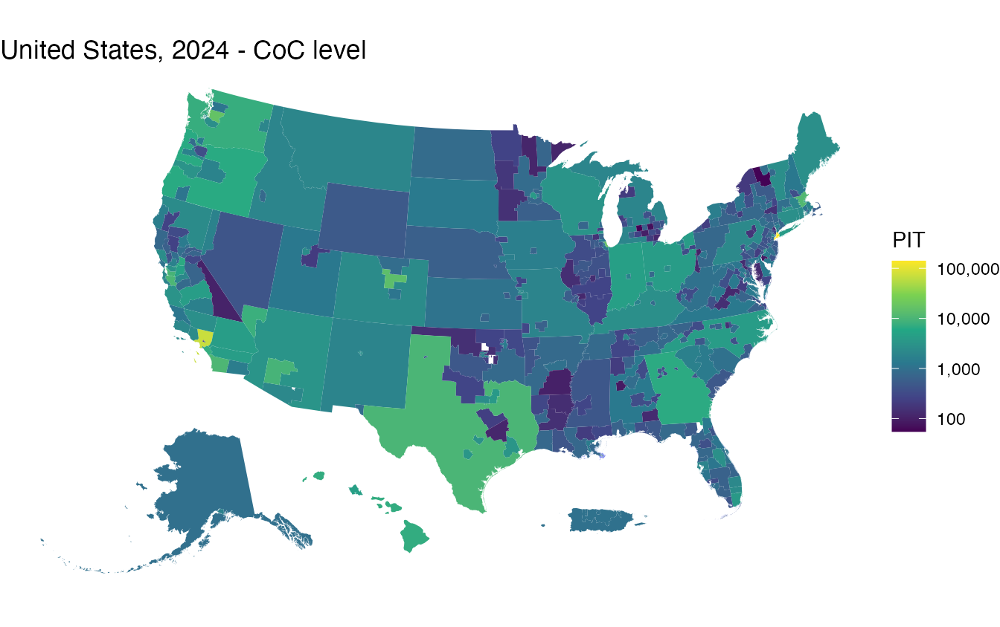
ggplot(cty24) + geom_sf(aes(fill = count), color = NA) + fillc("Est.") +
labs(title = "United States, 2024 - county level") + theme_void()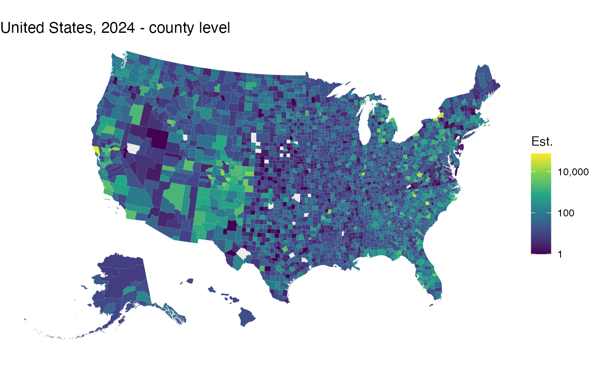
The same comparison for California and Washington:
state_pair <- function(st, fp) {
coc <- merge(coc2024, hud2024, by.x = "COCNUM", by.y = "coc_num")
coc <- coc[coc$ST == st, ]; coc$count <- poslog(coc$count)
sel <- substr(sp_homeless$fips, 1, 2) == fp
cty <- sp_homeless[sel, ]; cty$count <- poslog(sp_homeless$count24[sel])
print(ggplot(coc) + geom_sf(aes(fill = count), color = "grey70") + fillc("PIT") +
labs(title = paste(st, "2024 - CoC level")) + theme_void())
print(ggplot(cty) + geom_sf(aes(fill = count), color = "grey85") + fillc("Est.") +
labs(title = paste(st, "2024 - county level")) + theme_void())
}
state_pair("CA", "06")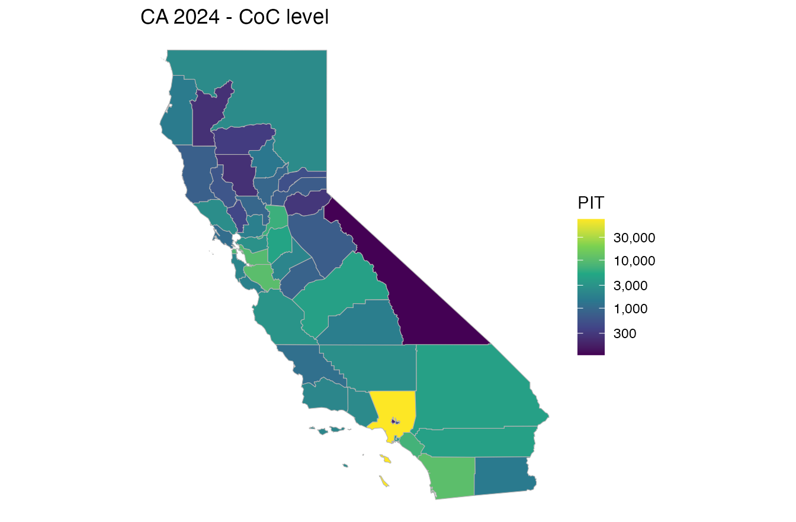
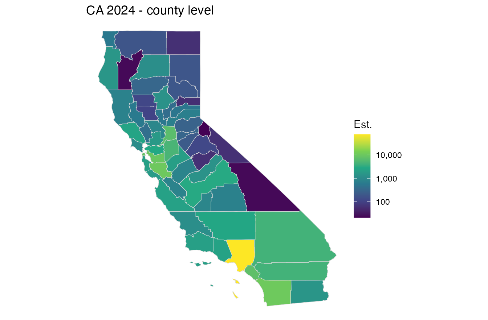
state_pair("WA", "53")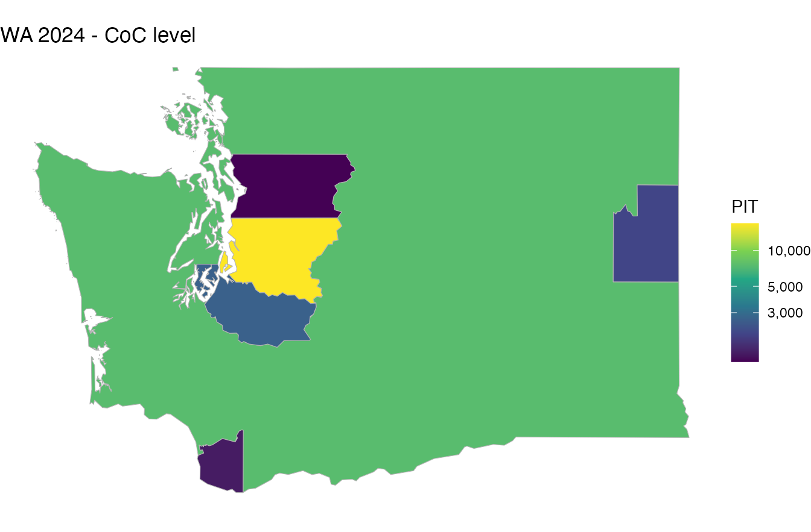
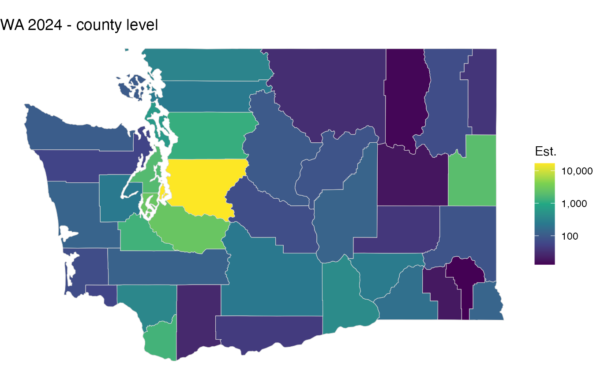
Per-capita rates, 2007 / 2010 / 2020 / 2024
Homeless per 100,000 residents. First at the county level:
yrs <- c(2007, 2010, 2020, 2024)
cty_pc <- do.call(rbind, lapply(yrs, function(y) {
g <- shift_geometry(sp_homeless["population"])
g$rate <- poslog(sp_homeless[[ycol(y)]] / sp_homeless$population * 1e5)
g$year <- y; g[, c("year", "rate")]
}))
ggplot(cty_pc) + geom_sf(aes(fill = rate), color = NA) +
facet_wrap(~ year) + fillr() +
labs(title = "County homeless per 100,000 (log scale)") + theme_void()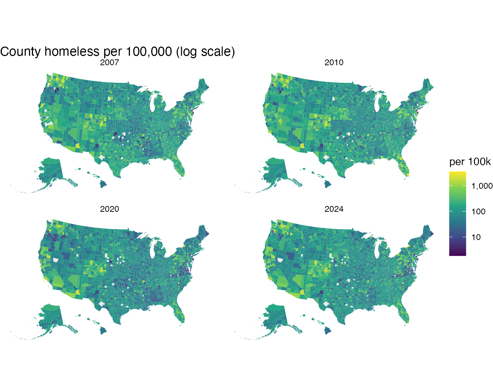
And at the CoC level (CoC count divided by the population of its counties):
coc_pc <- do.call(rbind, lapply(yrs, function(y) {
coc <- get(paste0("coc", y)); hud <- get(paste0("hud", y))
pp <- coc_pop(y)
g <- merge(coc, merge(hud, pp, by.x = "coc_num", by.y = "COCNUM"),
by.x = "COCNUM", by.y = "coc_num")
g <- shift_geometry(conus(g))
g$rate <- poslog(g$count / g$population * 1e5)
g$year <- y; g[, c("year", "rate")]
}))
#> although coordinates are longitude/latitude, st_intersects assumes that they
#> are planar
#> although coordinates are longitude/latitude, st_intersects assumes that they
#> are planar
#> although coordinates are longitude/latitude, st_intersects assumes that they
#> are planar
#> although coordinates are longitude/latitude, st_intersects assumes that they
#> are planar
#> although coordinates are longitude/latitude, st_intersects assumes that they
#> are planar
#> although coordinates are longitude/latitude, st_intersects assumes that they
#> are planar
#> although coordinates are longitude/latitude, st_intersects assumes that they
#> are planar
#> although coordinates are longitude/latitude, st_intersects assumes that they
#> are planar
ggplot(coc_pc) + geom_sf(aes(fill = rate), color = NA) +
facet_wrap(~ year) + fillr() +
labs(title = "CoC homeless per 100,000 (log scale)") + theme_void()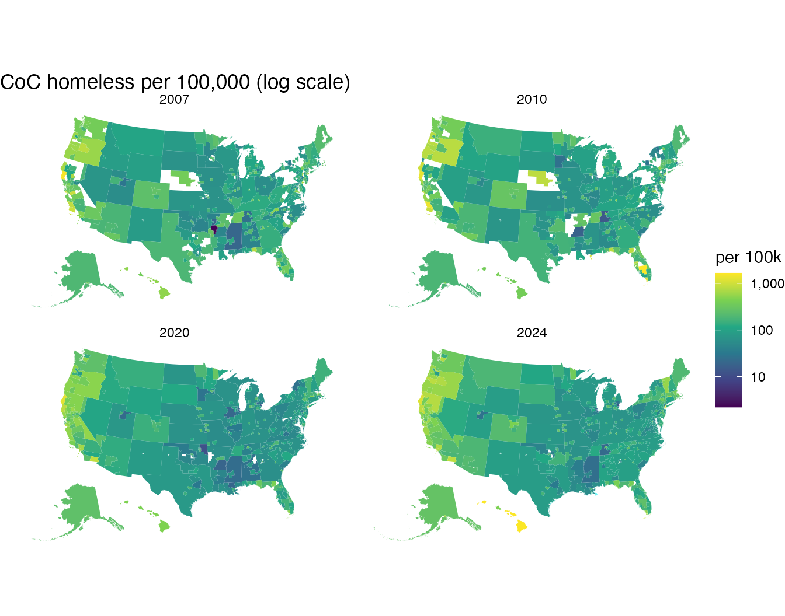
2025 at a glance: CoC vs county, total vs per-capita
Four views of the latest year on a log scale.
library(patchwork)
# CoC layer with total count and per-capita rate
coc25 <- merge(coc2025, hud2025, by.x = "COCNUM", by.y = "coc_num")
coc25 <- merge(coc25, coc_pop(2025), by = "COCNUM")
#> although coordinates are longitude/latitude, st_intersects assumes that they
#> are planar
#> although coordinates are longitude/latitude, st_intersects assumes that they
#> are planar
coc25$rate <- coc25$count / coc25$population * 1e5
coc25 <- shift_geometry(conus(coc25))
coc25$c_l <- poslog(coc25$count); coc25$r_l <- poslog(coc25$rate)
# county layer
cty25 <- shift_geometry(sp_homeless)
cty25$c_l <- poslog(sp_homeless$count25)
cty25$r_l <- poslog(sp_homeless$count25 / sp_homeless$population * 1e5)
panel <- function(g, col, sub) ggplot(g) +
geom_sf(aes(fill = .data[[col]]), color = NA) +
(if (grepl("100k", sub)) fillr() else fillc("count")) +
labs(subtitle = sub) + theme_void() +
theme(plot.subtitle = element_text(face = "bold"))
((panel(coc25, "c_l", "CoC - total") | panel(cty25, "c_l", "County - total")) /
(panel(coc25, "r_l", "CoC - per 100k") | panel(cty25, "r_l", "County - per 100k"))) +
plot_annotation(title = "2025 homelessness: total and per-capita, CoC vs county")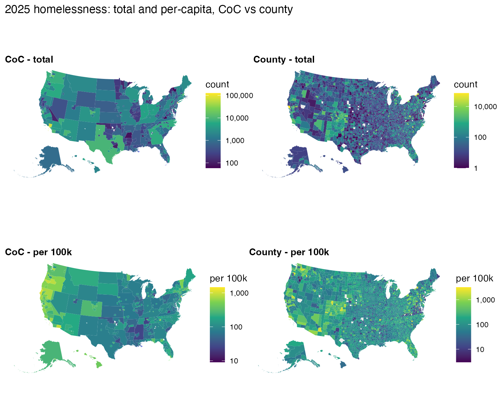